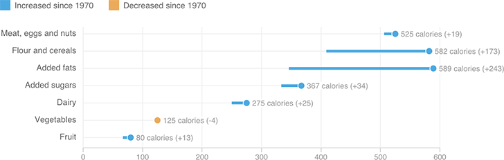

Much Of The Increase In Americans’ Calorie Intake Comes From Grains And Fats
Average daily calorie consumption per capita, by category (1970 vs. 2010)

Notes
The USDA uses food availability data to estimate per capita consumption. The figures used here also take into account food loss due to spoilage, waste and other factors.